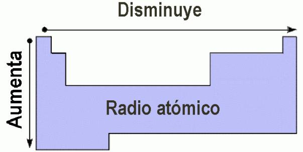

Un elemento químico es una sustancia pura formada por átomos que tienen el mismo número atómico. El número atómico representa la cantidad de protones en el núcleo del átomo.
Actualmente se conocen 118 elementos organizados en la tabla periódica.
Es un grupo de seis elementos que tienden a formar moléculas diatómicas muy activas químicamente, debido a su electronegatividad: suelen formar iones (moléculas cargadas eléctricamente) mononegativos. Los halógenos son altamente oxidantes, por lo que estos elementos suelen ser cáusticos y corrosivos.
Es un grupo de siete elementos cuyo estado natural es el gaseoso. Existen, por lo general, en su forma monoatómica de muy baja reactividad y por eso se los conoce también como gases inertes. Comparten la mayoría de sus propiedades físicas y son sumamente estables.
Los períodos indican el número de niveles de energía o capas electrónicas que posee un átomo.
A medida que se avanza en un período, las propiedades químicas cambian gradualmente.
El radio atómico es la distancia que existe entre el núcleo de un átomo y la capa más externa donde se encuentran sus electrones. Esta propiedad indica el tamaño de un átomo y varía dentro de la tabla periódica: generalmente aumenta al bajar en un grupo porque se agregan más niveles de energía, y disminuye al avanzar en un período debido a que el núcleo atrae con mayor fuerza a los electrones.

Ahora puedes poner a prueba tus conocimientos identificando grupos, períodos y propiedades en el juego interactivo.
Ir al Juego